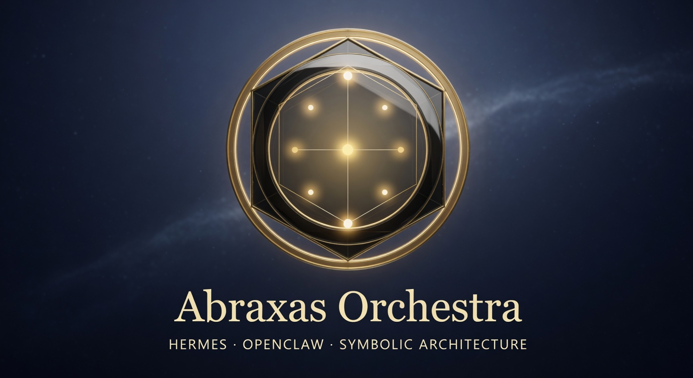

Hermes + OpenClaw skill
Abraxas Orchestra
Structure software with traditional symbolic maps — scaffold, diagram, and plan renames without silent auto-refactors.
v0.8.1 · offline · guided path

What it is
A coding-agent skill that organizes software the way traditional systems organize meaning — Tree of Life, alchemy, runes, planetary spheres, and related maps.
Scaffolds dual-named project skeletons, emits architecture diagrams, and analyzes a local tree into an honest rename plan. Weak mappings are labeled; writes require explicit confirmation.
In short
Prefer the guided wizard when flags are unclear: plan first, run only when you mean it. Offline CLI for Hermes and OpenClaw.
Built with
- Hermescoding agent that runs the skill
- OpenClawsecond agent host it installs into
- Pythonoffline command line, standard library only
- Mermaidarchitecture diagrams written next to each skeleton
- JavaScript, TypeScript, Go, Rust, Rubyother languages whose imports it can read
- GitHub Pageshosts the project's landing page
Changelog
Milestones in plain English, newest first, to Nov 7, 2026
- v0.8.1: updated the skill file to the newer Hermes Agent skill format.
- v0.8.0: added a guided wizard that plans a run first and acts only when approved.
- v0.5 to v0.7: reads JavaScript, TypeScript, Go, Rust and Ruby imports, and reports structure quality scores.
- v0.2 to v0.4: analyzes an existing codebase and plans renames, applying them only with confirmation and a backup.
- v0.1: first release with eleven symbolic maps, dual-named project skeletons and automatic architecture diagrams.
Roadmap
What comes next. Plans, not promises, and no dates.
- PlannedFuller understanding of non-Python languages, beyond reading their import lines.
- PlannedLet planned changes create new file content, only when the user explicitly asks.